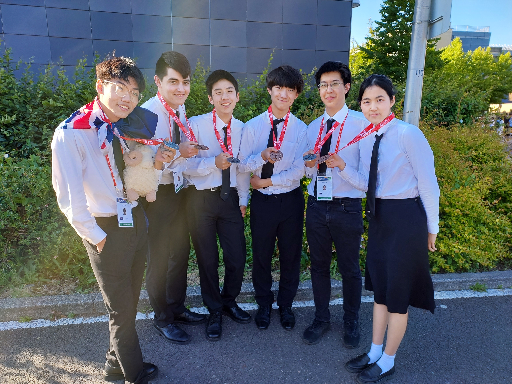

The NZ Mathematics Olympiad Committee is a dedicated committee of University lecturers and students, Mathematics teachers, and interested mathematicians who identify, select and mentor gifted and talented students through an annual programme of participation in international Olympiad competitions to give them an immense kick start to their mathematical careers. In turn former Olympians contribute to the next generations programmes by joining the committee and running the mentor programmes.
The committee is endorsed and supported by the NZ Mathematical Enrichment Trust, the NZ Association of Mathematics Teachers, the NZ Maths Olympiad Students Association, Universities and some companies.
The NZMOC provides activities for the enrichment and advancement of gifted and talented mathematical students under 19 and not enrolled in a university, through their website and hosting an annual week long residential camp in January. From this students are selected to attend the International Mathematical Olympiad in July - the toughest mathematical competition in the world.
First competed for in Romania in 1959 the competition has grown to over 100 countries sending teams of up to six. This makes it the oldest and largest Olympiad competition. New Zealand has competed with distinction since 1988 when it was hosted in Australia.
New Zealand has successfully competed in 37 International Olympiads with 2 – Gold, 15 - Silver, 62 – Bronze and 67 - Honourable Mentions. For full results go to the the IMO website.
The 2024 IMO was held in Bath, UK, including a pre-IMO camp, where the team sat a number of mock exams and socialised with other teams. This year was remarkable, as we did the best we have ever done, even beating Australia.
The 2024 Results were: Boning Dai (Wentworth Computer Science College), Chris Pan (Auckland Grammar School) and Jay Zhao (Macleans College) were awarded silver medals, and Dawn Chen (St Cuthbert's College), Nicholas McKinlay (Saint Kentigern College) and Haotian Wang (Auckland Grammar School) were awarded bronze medals. The team finished in 31st place, with perfect scores on problems 1 and 4. The students were great ambassadors for New Zealand and were very popular amongst other teams at the competition.
